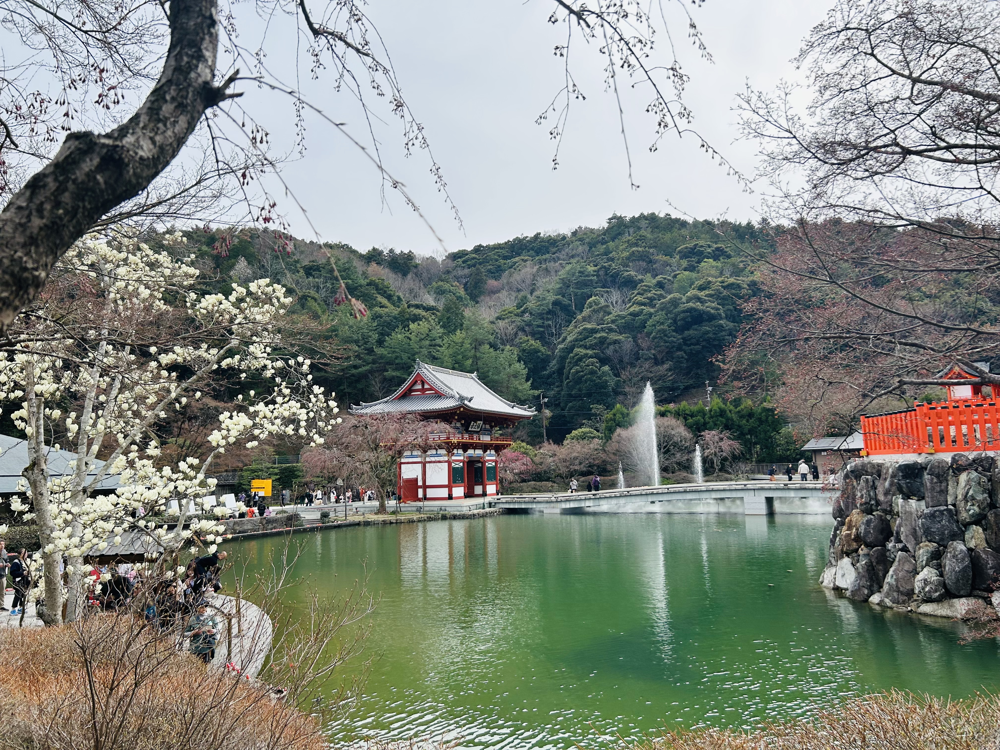
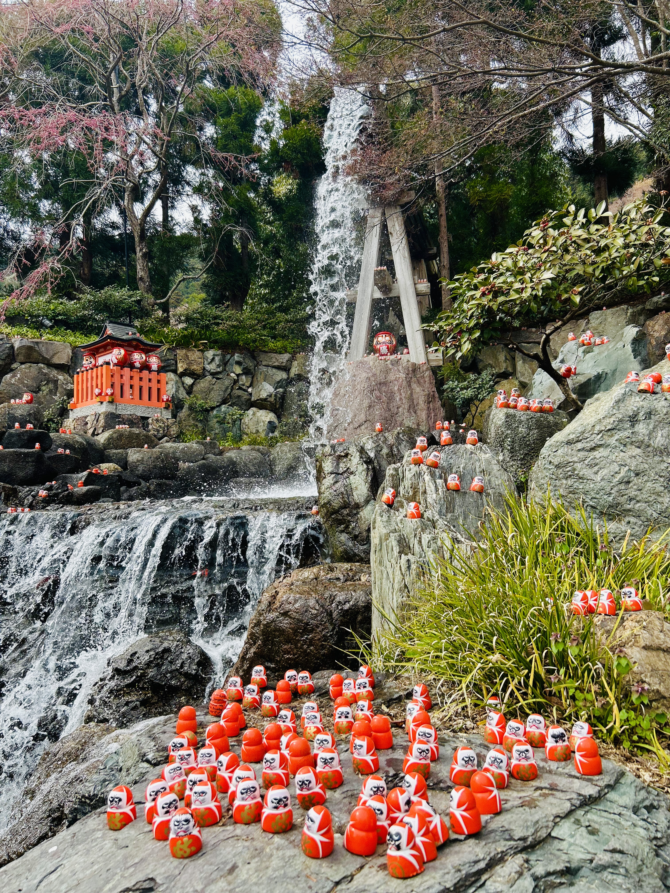
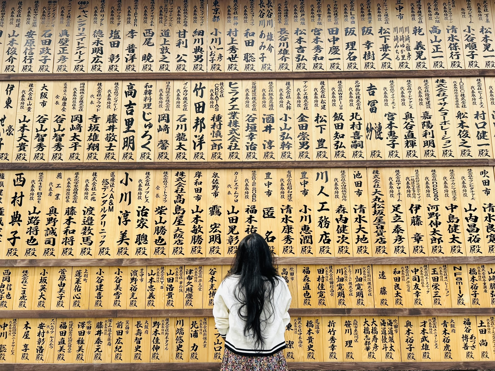

Katsuoji Daruma Temple, located in Osaka Prefecture, is a famous temple dedicated to victory and success. Visitors often come here to pray for good luck in exams, business, and personal endeavors. The temple is renowned for its thousands of colorful Daruma dolls, each representing a wish or goal.

Walking through the temple grounds, you will see shelves filled with Daruma dolls of all sizes and colors. Many visitors paint one eye of the Daruma when making a wish and paint the other eye when the wish comes true. The vibrant dolls create a cheerful and inspiring atmosphere.

The temple is also set in a beautiful natural environment with walking paths, small shrines, and seasonal flowers. Visiting Katsuoji Daruma Temple is not only spiritually uplifting but also visually delightful, making it a memorable destination for travelers and locals alike.

Whether you are seeking good fortune, inspiration, or simply a peaceful place to explore, Katsuoji Daruma Temple provides a unique experience filled with culture, tradition, and colorful charm. Don’t forget to bring home a Daruma as a keepsake of your visit!
